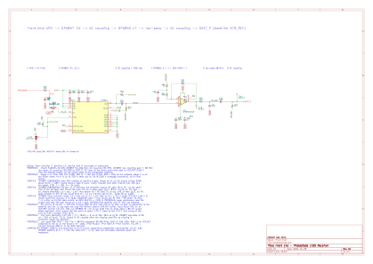
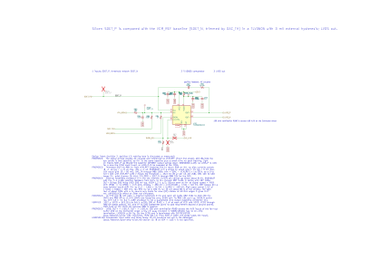
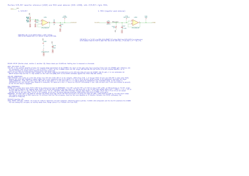

Receiver Module Rev A
KiCad schematic overview for placement and routing. Nothing here is measured or simulated except where a line says SIMULATED; the PCB has all 223 footprints placed by the first-pass placement script on a 75 x 50 mm placeholder outline (6-layer JLC06161H-3313); nothing is routed.
- Date
- 2026-10-12
- Spec revision
- 4
- Decision
- 14
- ERC
- 0 / 0
- Components
- 223
- Nets
- 144
Signal chain
The fast path (thick line) is analog from APD to the USB-C SuperSpeed TX pairs. Everything dashed is slow control and housekeeping. Box colour is the KiCad sheet the part lives on.
Sheet hierarchy
The root sheet holds only the six sheet symbols. Arrows follow the revision 4 hierarchical net table; GND is a global label on every sheet and is not drawn. SDET_N is built on the Slicer sheet and is not hierarchical.
graph LR CON["Connector"] PWR["Power"] FE["Front End"] SL["Slicer"] MON["Monitor"] CTL["Controller"] CON -->|VBUS| PWR CON -->|VBUS| CTL PWR -->|"3V3"| FE PWR -->|"3V3"| SL PWR -->|"3V3"| MON PWR -->|"3V3, 3V3_D"| CON PWR -->|"3V3_D, HV_MON"| CTL PWR -->|HV_MON| CON PWR -->|APD_BIAS| FE CTL -->|"DAC_HV, HV_DIS"| PWR CTL -->|TIA_CTRL| FE CTL -->|"DAC_TH, SHDN_N, LE_HYS"| SL FE -->|TIA_TAP| MON FE -->|SDET_P| SL MON -->|VCM_REF| FE MON -->|VCM_REF| SL MON -->|RSSI| CTL MON -->|RSSI| CON SL -->|VTH_MON| CTL SL -->|"LVDS_P, LVDS_N"| CON CTL <-->|"CAN_P, CAN_N, AUX, USB_DP, USB_DN"| CON CON -->|"CC1_SENSE, CC2_SENSE"| CTL classDef power fill:var(--power-bg),stroke:var(--power),color:var(--fg) classDef frontend fill:var(--frontend-bg),stroke:var(--frontend),color:var(--fg) classDef slicer fill:var(--slicer-bg),stroke:var(--slicer),color:var(--fg) classDef monitor fill:var(--monitor-bg),stroke:var(--monitor),color:var(--fg) classDef connector fill:var(--connector-bg),stroke:var(--connector),color:var(--fg) classDef controller fill:var(--controller-bg),stroke:var(--controller),color:var(--fg) class PWR power class FE frontend class SL slicer class MON monitor class CON connector class CTL controller
| Net | From | To | Purpose |
|---|---|---|---|
| VBUS | Connector (J50 VBUS pins) | Power (U5 IN); Controller (U61 pin 5) | The single 5 V input (decision 14); was Controller to Power before revision 4 |
| 3V3 | Power (U1) | Front End; Slicer; Monitor; Connector | Analog and fan-out rail, about 66 mA plus up to 35 mA for U50 (estimates) |
| 3V3_D | Power (U4) | Controller; Connector | Digital rail for the ESP32 block; radio must stay disabled |
| APD_BIAS | Power (HV filter stage 1) | Front End (R50) | 100-220 V APD bias, HV net |
| DAC_HV | Controller (MCP4728 OUTC) | Power | Trim input of the LT8365 feedback |
| HV_DIS | Controller (IO0) | Power (Q3 gate) | HV disable; default off until the ESP32 drives it low |
| HV_MON | Power | Controller; Connector (TP53) | HV divided by 101, the only HV observation point |
| TIA_CTRL | Controller (IO20) | Front End (U10 CTRL) | 20k/5k gain select; Front End pull-up gives 20k when unprogrammed |
| TIA_TAP | Front End (R58 from TIA_OUT) | Monitor | RSSI pick-off |
| SDET_P | Front End (C55/R59) | Slicer (U20 IN+) | AC-coupled signal on the VCM_REF baseline |
| VCM_REF | Monitor (U30A) | Front End; Slicer | 1.65 V baseline for all AC-coupled stages |
| RSSI | Monitor (U30B) | Controller (ADS1115); Connector (TP52) | Slow relative received-light indicator |
| DAC_TH | Controller (MCP4728 OUTB) | Slicer | Threshold trim about +/-16 mV around VCM_REF |
| VTH_MON | Slicer | Controller (ADS1115) | Threshold node readback |
| SHDN_N, LE_HYS | Controller (IO1, IO14) | Slicer | Comparator shutdown (active low) and latch option |
| LVDS_P, LVDS_N | Slicer (U20) | Connector (U50 A/B) | The 50 Mbps data pair; R180 terminates at U50 |
| CAN_P, CAN_N | Controller (U64) | Connector (both RX pairs, U52) | Bidirectional; no termination on the module |
| AUX | Controller (IO7 via R204) | Connector (R186, SBU tie) | Bidirectional slow line, SBU1 and SBU2 tied |
| USB_DP, USB_DN | Controller (U61, R193/R194) | Connector (J50 Dp/Dn ties) | Bidirectional USB 2.0 full speed |
| CC1_SENSE, CC2_SENSE | Connector (CC taps) | Controller (IO4, IO5) | Divided CC levels to ADC pins |
Removed in revision 4: +5V_CABLE, PWR_SRC, AUX2, and the Controller to Power VBUS. +5V is internal to the Power sheet.
Sheets and parts
Power 79Front End 26Slicer 17Monitor 13Connector 33Controller 55DNP 21
Root drawing: root sheet SVG · whole project PDF.

Power
79 partsTakes VBUS through the TPS259631 eFuse U5 into the internal +5V rail, then makes 3V3 (TPS79901 U1) and 3V3_D (TPS7A2033 U4). It also hosts the LT8365 boost-plus-doubler APD bias (100-220 V) with the DAC_HV trim input, the HV_DIS gate Q3, the clamp and the HV_MON divider.

open full size (Power sheet SVG)
Test points TP2 SYNC_EXT, TP3 IMON, TP4 FLT
| Ref | Value | Footprint | Library symbol |
|---|---|---|---|
| C1 | 10uF 10V | C_0805_2012Metric_N | AharoniLab_Passive:C_Small |
| C2 | 100nF | C_0603_1608Metric_N | AharoniLab_Passive:C_Small |
| C5 | 0.1uF 200V X7R | C_1206_3216Metric_N | AharoniLab_Passive:C_Small |
| C6 | 0.1uF 200V X7R | C_1206_3216Metric_N | AharoniLab_Passive:C_Small |
| C7 | 0.1uF 200V X7R | C_1206_3216Metric_N | AharoniLab_Passive:C_Small |
| C8 | 10nF 500V C0G | C_1210_3225Metric_N | AharoniLab_Passive:C_Small |
| C9 | 1uF | C_0603_1608Metric_N | AharoniLab_Passive:C_Small |
| C10 | 4.7uF 10V | C_0805_2012Metric_N | AharoniLab_Passive:C_Small |
| C11 | 4.7uF 10V | C_0805_2012Metric_N | AharoniLab_Passive:C_Small |
| C12 | 1nF C0G | C_0603_1608Metric_N | AharoniLab_Passive:C_Small |
| C18 | 10uF 50V | C_1206_3216Metric_N | AharoniLab_Passive:C_Small |
| C19 | 10uF 50V | C_1206_3216Metric_N | AharoniLab_Passive:C_Small |
| C20 | 4.7uF 50V | C_0805_2012Metric_N | AharoniLab_Passive:C_Small |
| C21 | 1uF 25V | C_0603_1608Metric_N | AharoniLab_Passive:C_Small |
| C22 | 0.22uF | C_0603_1608Metric_N | AharoniLab_Passive:C_Small |
| C23 | 1nF C0G | C_0603_1608Metric_N | AharoniLab_Passive:C_Small |
| C24DNP | 10pF C0G | C_0603_1608Metric_N | AharoniLab_Passive:C_Small |
| C25 | 1nF 500V | C_1206_3216Metric_N | AharoniLab_Passive:C_Small |
| C26DNP | 10pF C0G | C_0603_1608Metric_N | AharoniLab_Passive:C_Small |
| C27 | 100nF | C_0603_1608Metric_N | AharoniLab_Passive:C_Small |
| C28 | 10nF | C_0603_1608Metric_N | AharoniLab_Passive:C_Small |
| C29 | 1uF 10V | C_0603_1608Metric_N | AharoniLab_Passive:C_Small |
| C30 | 10uF 10V | C_0805_2012Metric_N | AharoniLab_Passive:C_Small |
| C31 | 1uF 10V | C_0603_1608Metric_N | AharoniLab_Passive:C_Small |
| C32 | 47nF X7R 10V | C_0603_1608Metric_N | AharoniLab_Passive:C_Small |
| C33 | 4.7uF 25V | C_0805_2012Metric_N | AharoniLab_Passive:C_Small |
| D1 | DFLS1150-7 | Diodes_PowerDI-123 | AharoniLab_Passive:DFLS1150-7 |
| D2DNP | DFLS1150-7 | Diodes_PowerDI-123 | AharoniLab_Passive:DFLS1150-7 |
| D3 | DFLS1150-7 | Diodes_PowerDI-123 | AharoniLab_Passive:DFLS1150-7 |
| D4 | DFLS1150-7 | Diodes_PowerDI-123 | AharoniLab_Passive:DFLS1150-7 |
| J1DNP | HV FORCE ON | PinHeader_1x02_P2.54mm_Vertical | AharoniLab_Connector:Conn_01x02 |
| L1 | 10uH 1.5A | Wuerth_74437324100 | AharoniLab_Passive:L |
| L2 | 0.47uH 2.1A | L_0805_2012Metric_N | AharoniLab_Passive:L |
| Q1 | MMBTA42 | SOT-23 | AharoniLab_Transistor:MMBTA42 |
| Q2 | MMBT3904 | SOT-23 | AharoniLab_Transistor:MMBT3904 |
| Q3 | DMN2056U-7 | SOT-23 | AharoniLab_Transistor:DMN2056U-7 |
| R1 | 17.8k 1% | R_0603_1608Metric_N | AharoniLab_Passive:R_Small_US |
| R2 | 10.0k 1% | R_0603_1608Metric_N | AharoniLab_Passive:R_Small_US |
| R7 | 20R | R_0805_2012Metric_N | AharoniLab_Passive:R_Small_US |
| R8 | 2.05M 1% | R_0603_1608Metric_N | AharoniLab_Passive:R_Small_US |
| R9 | 2.05M 1% | R_0603_1608Metric_N | AharoniLab_Passive:R_Small_US |
| R10 | 2.05M 1% | R_0603_1608Metric_N | AharoniLab_Passive:R_Small_US |
| R11 | 2.05M 1% | R_0603_1608Metric_N | AharoniLab_Passive:R_Small_US |
| R12 | 86.6k 1% | R_0603_1608Metric_N | AharoniLab_Passive:R_Small_US |
| R13 | 10k | R_0603_1608Metric_N | AharoniLab_Passive:R_Small_US |
| R14 | 442k 0.1% | R_0603_1608Metric_N | AharoniLab_Passive:R_Small_US |
| R15DNP | 274k | R_0603_1608Metric_N | AharoniLab_Passive:R_Small_US |
| R16 | 4.02k 1% | R_0603_1608Metric_N | AharoniLab_Passive:R_Small_US |
| R17 | 4.99M 1% | R_0603_1608Metric_N | AharoniLab_Passive:R_Small_US |
| R18 | 4.99M 1% | R_0603_1608Metric_N | AharoniLab_Passive:R_Small_US |
| R19 | 27k 1206 200V | R_1206_3216Metric_N | AharoniLab_Passive:R_Small_US |
| R20 | 4.99M 1% | R_0603_1608Metric_N | AharoniLab_Passive:R_Small_US |
| R21 | 100k 1% | R_0603_1608Metric_N | AharoniLab_Passive:R_Small_US |
| R22 | 200k 1% | R_0603_1608Metric_N | AharoniLab_Passive:R_Small_US |
| R23 | 200k 1% | R_0603_1608Metric_N | AharoniLab_Passive:R_Small_US |
| R24 | 84.5k 1% | R_0603_1608Metric_N | AharoniLab_Passive:R_Small_US |
| R25 | 84.5k 1% | R_0603_1608Metric_N | AharoniLab_Passive:R_Small_US |
| R26DNP | 100k | R_0603_1608Metric_N | AharoniLab_Passive:R_Small_US |
| R27DNP | 0R | R_0603_1608Metric_N | AharoniLab_Passive:R_Small_US |
| R28 | 0R | R_0603_1608Metric_N | AharoniLab_Passive:R_Small_US |
| R29DNP | 0R | R_0603_1608Metric_N | AharoniLab_Passive:R_Small_US |
| R30 | 47R | R_1206_3216Metric_N | AharoniLab_Passive:R_Small_US |
| R32 | 4.99M 1% | R_0603_1608Metric_N | AharoniLab_Passive:R_Small_US |
| R33 | 100k | R_0603_1608Metric_N | AharoniLab_Passive:R_Small_US |
| R34 | 1k | R_0603_1608Metric_N | AharoniLab_Passive:R_Small_US |
| R35 | 357k 1% | R_0603_1608Metric_N | AharoniLab_Passive:R_Small_US |
| R36 | 43.2k 1% | R_0603_1608Metric_N | AharoniLab_Passive:R_Small_US |
| R37 | 100k 1% | R_0603_1608Metric_N | AharoniLab_Passive:R_Small_US |
| R38 | 1.21k 1% | R_0603_1608Metric_N | AharoniLab_Passive:R_Small_US |
| R39DNP | 100k | R_0603_1608Metric_N | AharoniLab_Passive:R_Small_US |
| RV1DNP | 50k trim | Bourns_3224W_SMD | AharoniLab_Passive:R_Potentiometer_Trim |
| TH1 | NTC 10k B3950 | R_0603_1608Metric_N | AharoniLab_Passive:Thermistor_NTC |
| TP2 | SYNC_EXT | TestPoint_Pad_1.0x1.0mm_interconnect | AharoniLab_Connector:TestPoint |
| TP3 | IMON | TestPoint_Pad_1.0x1.0mm_interconnect | AharoniLab_Connector:TestPoint |
| TP4 | FLT | TestPoint_Pad_1.0x1.0mm_interconnect | AharoniLab_Connector:TestPoint |
| U1 | TPS79901DDCT | SOT-23-5 | AharoniLab_Power:TPS79901DDCT |
| U3 | LT8365EMSE | Analog_MSE16-12_MSOP-16-1EP_3x4mm_P0.5mm_EP1.65x2.85mm | AharoniLab_Power:LT8365EMSE |
| U4 | TPS7A2033PDBV | SOT-23-5 | AharoniLab_Power:TPS7A2033PDBV |
| U5 | TPS259631DDAR | Texas_DDA-R-PDSO-G8_SO-PowerPAD-8_3.9x4.9mm_P1.27mm_EP2.4x3.1mm | AharoniLab_Power:TPS259631DDAR |
Front End
26 partsCarries the S12023-10 APD (D10, cathode to the R50/C50 filter, anode to TIA_IN), the OPA857 TIA with its 20k/5k CTRL pin, AC coupling and the OPA855 x7 post-amp. A 68 MHz low-pass and a second AC coupling return the signal to the VCM_REF baseline as SDET_P, with TIA_TAP as the RSSI pick-off.

open full size (Front End sheet SVG)

Test points TP10 PA_OUT, TP11 SDET_P, TP12 TIA_REF
| Ref | Value | Footprint | Library symbol |
|---|---|---|---|
| C50 | 10n | C_1210_3225Metric_N | AharoniLab_Passive:C_Small |
| C51 | 100n | C_0603_1608Metric_N | AharoniLab_Passive:C_Small |
| C52 | 100n | C_0402_1005Metric_N | AharoniLab_Passive:C_Small |
| C53 | 1u | C_0603_1608Metric_N | AharoniLab_Passive:C_Small |
| C54 | 47p | C_0603_1608Metric_N | AharoniLab_Passive:C_Small |
| C55 | 100n | C_0603_1608Metric_N | AharoniLab_Passive:C_Small |
| C56 | 100n | C_0402_1005Metric_N | AharoniLab_Passive:C_Small |
| C57 | 100n | C_0402_1005Metric_N | AharoniLab_Passive:C_Small |
| C58 | 1u | C_0603_1608Metric_N | AharoniLab_Passive:C_Small |
| C59 | 1u | C_0603_1608Metric_N | AharoniLab_Passive:C_Small |
| D10 | S12023-10 | Hamamatsu_S12023_TO-18_P2.54mm_Vertical | AharoniLab_Passive:S12023-10 |
| JP10 | 3V3=20k | SolderJumper-3_P1.3mm_Open_RoundedPad1.0x1.5mm | AharoniLab_Connector:SolderJumper_3_Open |
| R50 | 10k | R_1206_3216Metric_N | AharoniLab_Passive:R_Small_US |
| R51 | 1k | R_0603_1608Metric_N | AharoniLab_Passive:R_Small_US |
| R53 | 301 | R_0603_1608Metric_N | AharoniLab_Passive:R_Small_US |
| R54 | 49.9 | R_0603_1608Metric_N | AharoniLab_Passive:R_Small_US |
| R56 | 49.9 | R_0603_1608Metric_N | AharoniLab_Passive:R_Small_US |
| R57 | 100k | R_0603_1608Metric_N | AharoniLab_Passive:R_Small_US |
| R58 | 1k | R_0603_1608Metric_N | AharoniLab_Passive:R_Small_US |
| R59 | 1k | R_0603_1608Metric_N | AharoniLab_Passive:R_Small_US |
| R60 | 10 | R_0603_1608Metric_N | AharoniLab_Passive:R_Small_US |
| TP10 | PA_OUT | TestPoint_Pad_1.0x1.0mm_interconnect | AharoniLab_Connector:TestPoint |
| TP11 | SDET_P | TestPoint_Pad_1.0x1.0mm_interconnect | AharoniLab_Connector:TestPoint |
| TP12 | TIA_REF | TestPoint_Pad_1.0x1.0mm_interconnect | AharoniLab_Connector:TestPoint |
| U10 | OPA857 | RGT0016A | AharoniLab_OpAmp:OPA857 |
| U11 | OPA855IDSGR | Texas_DSG0008A_WSON-8_2x2mm_P0.5mm_EP0.9x1.6mm | AharoniLab_OpAmp:OPA855IDSGR |
Slicer
17 partsThe TLV3605 U20 compares SDET_P against SDET_N (VCM_REF plus a small DAC_TH trim) with about 3 mV of external hysteresis, so slicing happens at the AC baseline with no MCU in the path. Its LVDS output leaves as LVDS_P/LVDS_N toward the fan-out buffer on the Connector sheet, and VTH_MON reports the threshold node.

open full size (Slicer sheet SVG)

Test points TP20 SDET_N, TP21 SDET_P (DNP)
| Ref | Value | Footprint | Library symbol |
|---|---|---|---|
| C80 | 100n | C_0402_1005Metric_N | AharoniLab_Passive:C_Small |
| C81 | 1u | C_0603_1608Metric_N | AharoniLab_Passive:C_Small |
| C82 | 100n | C_0402_1005Metric_N | AharoniLab_Passive:C_Small |
| C83 | 1u | C_0603_1608Metric_N | AharoniLab_Passive:C_Small |
| C84 | 10n | C_0603_1608Metric_N | AharoniLab_Passive:C_Small |
| C87 | 100p | C_0603_1608Metric_N | AharoniLab_Passive:C_Small |
| R80 | 0R | R_0603_1608Metric_N | AharoniLab_Passive:R_Small_US |
| R81 | 10k | R_0603_1608Metric_N | AharoniLab_Passive:R_Small_US |
| R82DNP | 150k | R_0603_1608Metric_N | AharoniLab_Passive:R_Small_US |
| R83DNP | 0R | R_0603_1608Metric_N | AharoniLab_Passive:R_Small_US |
| R84 | 1k | R_0603_1608Metric_N | AharoniLab_Passive:R_Small_US |
| R85 | 100k | R_0603_1608Metric_N | AharoniLab_Passive:R_Small_US |
| R86 | 10k | R_0603_1608Metric_N | AharoniLab_Passive:R_Small_US |
| R87 | 5.49k | R_0603_1608Metric_N | AharoniLab_Passive:R_Small_US |
| TP20 | SDET_N | TestPoint_Pad_1.0x1.0mm_interconnect | AharoniLab_Connector:TestPoint |
| TP21DNP | SDET_P | TestPoint_Pad_1.0x1.0mm_interconnect | AharoniLab_Connector:TestPoint |
| U20 | TLV3605RVKR | Texas_RVK0012A_WQFN-12-1EP_3x3mm_P0.5mm_EP1.75x1.75mm | AharoniLab_OpAmp:TLV3605RVKR |
Monitor
13 partsU30 OPA2320 buffers a 1.65 V mid-supply reference as VCM_REF, the common baseline for every AC-coupled stage after the TIA. Its second amplifier buffers a BAS70 negative-peak detector on TIA_TAP as RSSI, a slow relative light indicator for the ESP32.

open full size (Monitor sheet SVG)

Test points TP30 VCM_REF, TP31 RSSI, TP32 RSSI_HOLD
| Ref | Value | Footprint | Library symbol |
|---|---|---|---|
| C100 | 100n | C_0603_1608Metric_N | AharoniLab_Passive:C_Small |
| C101 | 1u | C_0603_1608Metric_N | AharoniLab_Passive:C_Small |
| C102 | 1n C0G | C_0603_1608Metric_N | AharoniLab_Passive:C_Small |
| C103 | 100n | C_0603_1608Metric_N | AharoniLab_Passive:C_Small |
| D30 | BAS70 | SOT-23 | AharoniLab_Passive:BAS70 |
| R100 | 10k | R_0603_1608Metric_N | AharoniLab_Passive:R_Small_US |
| R101 | 10k | R_0603_1608Metric_N | AharoniLab_Passive:R_Small_US |
| R102 | 10 | R_0603_1608Metric_N | AharoniLab_Passive:R_Small_US |
| R103 | 1M | R_0603_1608Metric_N | AharoniLab_Passive:R_Small_US |
| TP30 | VCM_REF | TestPoint_Pad_1.0x1.0mm_interconnect | AharoniLab_Connector:TestPoint |
| TP31 | RSSI | TestPoint_Pad_1.0x1.0mm_interconnect | AharoniLab_Connector:TestPoint |
| TP32 | RSSI_HOLD | TestPoint_Pad_1.0x1.0mm_interconnect | AharoniLab_Connector:TestPoint |
| U30 | OPA2320AIDR | SOIC-8_3.9x4.9mm_P1.27mm | AharoniLab_OpAmp:OPA2320AIDR |
Connector
33 partsOne 24-pin USB-C receptacle J50 carries VBUS, USB D+/D-, CC1/CC2, SBU (tied as AUX), the LVDS on both SuperSpeed TX pairs via the SN65LVDS104 fan-out U50, and CAN on both RX pairs, with ESD arrays U51/U52. Four M2 plated mounting holes H1-H4 are tied to GND. CAN on both RX pairs uses nets CAN_P/CAN_N (CANH/CANL; renamed from CAN_H/CAN_L 2026-10-16 so the KiCad diff-pair router pairs them). J51 is the scope header on fan-out output 3, and TP50-TP55 expose rails and monitors.

open full size (Connector sheet SVG)
Test points TP50 3V3, TP51 3V3_D, TP52 RSSI, TP53 HV_MON, TP54 GND, TP55 GND
| Ref | Value | Footprint | Library symbol |
|---|---|---|---|
| C180DNP | 4.7nF | C_0603_1608Metric_N | AharoniLab_Passive:C_Small |
| C181 | 1nF | C_0603_1608Metric_N | AharoniLab_Passive:C_Small |
| C182 | 100nF | C_0603_1608Metric_N | AharoniLab_Passive:C_Small |
| C183 | 100nF | C_0603_1608Metric_N | AharoniLab_Passive:C_Small |
| C184 | 100nF | C_0402_1005Metric_N | AharoniLab_Passive:C_Small |
| C185 | 1uF | C_0603_1608Metric_N | AharoniLab_Passive:C_Small |
| H1 | M2 GND | MountingHole_2.2mm_M2_Pad_Via | AharoniLab_Connector:MountingHole_Pad |
| H2 | M2 GND | MountingHole_2.2mm_M2_Pad_Via | AharoniLab_Connector:MountingHole_Pad |
| H3 | M2 GND | MountingHole_2.2mm_M2_Pad_Via | AharoniLab_Connector:MountingHole_Pad |
| H4 | M2 GND | MountingHole_2.2mm_M2_Pad_Via | AharoniLab_Connector:MountingHole_Pad |
| J50 | 632723300011 | Wuerth_632723300011 | AharoniLab_Connector:632723300011 |
| J51 | DEBUG / scope | PinHeader_1x06_P2.54mm_Vertical | AharoniLab_Connector:Conn_01x06 |
| R170DNP | 1M | R_0603_1608Metric_N | AharoniLab_Passive:R_Small_US |
| R177DNP | 100R | R_0603_1608Metric_N | AharoniLab_Passive:R_Small_US |
| R180 | 100R 0.1% | R_0603_1608Metric_N | AharoniLab_Passive:R_Small_US |
| R181 | 5.1k 1% | R_0603_1608Metric_N | AharoniLab_Passive:R_Small_US |
| R182DNP | 60.4R 1% | R_0603_1608Metric_N | AharoniLab_Passive:R_Small_US |
| R183DNP | 60.4R 1% | R_0603_1608Metric_N | AharoniLab_Passive:R_Small_US |
| R184 | 5.1k 1% | R_0603_1608Metric_N | AharoniLab_Passive:R_Small_US |
| R185 | 100k | R_0603_1608Metric_N | AharoniLab_Passive:R_Small_US |
| R186 | 1k | R_0603_1608Metric_N | AharoniLab_Passive:R_Small_US |
| R187 | 100k | R_0603_1608Metric_N | AharoniLab_Passive:R_Small_US |
| R188 | 100k | R_0603_1608Metric_N | AharoniLab_Passive:R_Small_US |
| R189 | 100k | R_0603_1608Metric_N | AharoniLab_Passive:R_Small_US |
| TP50 | 3V3 | TestPoint_Pad_1.0x1.0mm_interconnect | AharoniLab_Connector:TestPoint |
| TP51 | 3V3_D | TestPoint_Pad_1.0x1.0mm_interconnect | AharoniLab_Connector:TestPoint |
| TP52 | RSSI | TestPoint_Pad_1.0x1.0mm_interconnect | AharoniLab_Connector:TestPoint |
| TP53 | HV_MON | TestPoint_Pad_1.0x1.0mm_interconnect | AharoniLab_Connector:TestPoint |
| TP54 | GND | TestPoint_Pad_1.0x1.0mm_interconnect | AharoniLab_Connector:TestPoint |
| TP55 | GND | TestPoint_Pad_1.0x1.0mm_interconnect | AharoniLab_Connector:TestPoint |
| U50 | SN65LVDS104PW | TSSOP-16_4.4x5mm_P0.65mm | AharoniLab_Interface:SN65LVDS104PW |
| U51 | TPD6E05U06 | Texas_R-PUSON-N14 | AharoniLab_Misc:TPD6E05U06 |
| U52 | TPD6E05U06 | Texas_R-PUSON-N14 | AharoniLab_Misc:TPD6E05U06 |
Controller
55 partsThe ESP32-C6-MINI-1 U60 does slow range trim only (MCP4728 DAC U62, ADS1115 ADC U63, TIA_CTRL, HV_DIS) plus the SN65HVD230 CAN link U64 and native USB through the USBLC6 U61. RESET/BOOT switches and the status LED are here; the module still decodes when the ESP32 is unprogrammed.

open full size (Controller sheet SVG)
Test points TP60 EN, TP61 BOOT, TP62 TXD0, TP63 RXD0, TP64 SDA, TP65 SCL, TP66 CAN_TX, TP67 CAN_RX, TP68 DAC_A, TP69 DAC_D
| Ref | Value | Footprint | Library symbol |
|---|---|---|---|
| C190 | 1u | C_0603_1608Metric_N | AharoniLab_Passive:C_Small |
| C191 | 10u | C_0805_2012Metric_N | AharoniLab_Passive:C_Small |
| C192 | 100n | C_0402_1005Metric_N | AharoniLab_Passive:C_Small |
| C194 | 100n | C_0402_1005Metric_N | AharoniLab_Passive:C_Small |
| C195 | 100n | C_0402_1005Metric_N | AharoniLab_Passive:C_Small |
| C196 | 100n | C_0402_1005Metric_N | AharoniLab_Passive:C_Small |
| C197 | 10n | C_0603_1608Metric_N | AharoniLab_Passive:C_Small |
| C198 | 10n | C_0603_1608Metric_N | AharoniLab_Passive:C_Small |
| C199 | 10n | C_0603_1608Metric_N | AharoniLab_Passive:C_Small |
| C200 | 10n | C_0603_1608Metric_N | AharoniLab_Passive:C_Small |
| C201 | 100n | C_0603_1608Metric_N | AharoniLab_Passive:C_Small |
| C202 | 100n | C_0603_1608Metric_N | AharoniLab_Passive:C_Small |
| C203 | 100n | C_0603_1608Metric_N | AharoniLab_Passive:C_Small |
| C204 | 100n | C_0603_1608Metric_N | AharoniLab_Passive:C_Small |
| C206DNP | TBD | C_0402_1005Metric_N | AharoniLab_Passive:C_Small |
| C207DNP | TBD | C_0402_1005Metric_N | AharoniLab_Passive:C_Small |
| D60 | LED | LED_0805_2012Metric | AharoniLab_Passive:LED |
| R190 | 10k | R_0603_1608Metric_N | AharoniLab_Passive:R_Small_US |
| R191 | 10k | R_0603_1608Metric_N | AharoniLab_Passive:R_Small_US |
| R192 | 10k | R_0603_1608Metric_N | AharoniLab_Passive:R_Small_US |
| R193 | 22R | R_0603_1608Metric_N | AharoniLab_Passive:R_Small_US |
| R194 | 22R | R_0603_1608Metric_N | AharoniLab_Passive:R_Small_US |
| R195 | 4.7k | R_0603_1608Metric_N | AharoniLab_Passive:R_Small_US |
| R196 | 4.7k | R_0603_1608Metric_N | AharoniLab_Passive:R_Small_US |
| R197 | 10k | R_0603_1608Metric_N | AharoniLab_Passive:R_Small_US |
| R198 | 10k | R_0603_1608Metric_N | AharoniLab_Passive:R_Small_US |
| R199 | 100k | R_0603_1608Metric_N | AharoniLab_Passive:R_Small_US |
| R203 | 1k | R_0603_1608Metric_N | AharoniLab_Passive:R_Small_US |
| R204 | 1k | R_0603_1608Metric_N | AharoniLab_Passive:R_Small_US |
| R205DNP | 0R | R_0603_1608Metric_N | AharoniLab_Passive:R_Small_US |
| R206 | 10k | R_0603_1608Metric_N | AharoniLab_Passive:R_Small_US |
| R207 | 10k | R_0603_1608Metric_N | AharoniLab_Passive:R_Small_US |
| R208 | 10k | R_0603_1608Metric_N | AharoniLab_Passive:R_Small_US |
| R209 | 10k | R_0603_1608Metric_N | AharoniLab_Passive:R_Small_US |
| R210 | 100R | R_0603_1608Metric_N | AharoniLab_Passive:R_Small_US |
| R211 | 100R | R_0603_1608Metric_N | AharoniLab_Passive:R_Small_US |
| R212 | 100R | R_0603_1608Metric_N | AharoniLab_Passive:R_Small_US |
| R213 | 100R | R_0603_1608Metric_N | AharoniLab_Passive:R_Small_US |
| SW60 | RESET | SW_SPST_PTS810 | AharoniLab_Switch:PTS810SJM250SMTRLFS |
| SW61 | BOOT | SW_SPST_PTS810 | AharoniLab_Switch:PTS810SJM250SMTRLFS |
| TP60 | EN | TestPoint_Pad_1.0x1.0mm_interconnect | AharoniLab_Connector:TestPoint |
| TP61 | BOOT | TestPoint_Pad_1.0x1.0mm_interconnect | AharoniLab_Connector:TestPoint |
| TP62 | TXD0 | TestPoint_Pad_1.0x1.0mm_interconnect | AharoniLab_Connector:TestPoint |
| TP63 | RXD0 | TestPoint_Pad_1.0x1.0mm_interconnect | AharoniLab_Connector:TestPoint |
| TP64 | SDA | TestPoint_Pad_1.0x1.0mm_interconnect | AharoniLab_Connector:TestPoint |
| TP65 | SCL | TestPoint_Pad_1.0x1.0mm_interconnect | AharoniLab_Connector:TestPoint |
| TP66 | CAN_TX | TestPoint_Pad_1.0x1.0mm_interconnect | AharoniLab_Connector:TestPoint |
| TP67 | CAN_RX | TestPoint_Pad_1.0x1.0mm_interconnect | AharoniLab_Connector:TestPoint |
| TP68 | DAC_A | TestPoint_Pad_1.0x1.0mm_interconnect | AharoniLab_Connector:TestPoint |
| TP69 | DAC_D | TestPoint_Pad_1.0x1.0mm_interconnect | AharoniLab_Connector:TestPoint |
| U60 | ESP32-C6-MINI-1-N4 | Espressif_ESP32-C6-MINI-1 | AharoniLab_MCU:ESP32-C6-MINI-1 |
| U61 | USBLC6-2SC6 | SOT-23-6 | AharoniLab_Misc:USBLC6-2SC6 |
| U62 | MCP4728T-E_UN | MSOP-10_3x3mm_P0.5mm | AharoniLab_Misc:MCP4728T-E_UN |
| U63 | ADS1115IDGSR | MSOP-10_3x3mm_P0.5mm | AharoniLab_Misc:ADS1115IDGSR |
| U64 | SN65HVD230D | SOIC-8_3.9x4.9mm_P1.27mm | AharoniLab_Interface:SN65HVD230D |
Connector pinout, GPIO and I2C
J50 USB-C, 24 pins
Wuerth 632723300011, horizontal. A5/B5 are labelled CC/VCONN by Wuerth and wired as CC1/CC2 (PROPOSED reading). Plug orientation does not matter.
| Pin | Type-C name | Net | Function |
|---|---|---|---|
| A1 | GND | GND | Ground |
| A2 | SSTXp1 | LVDS_OUT2_N | Module LVDS, U50 2Z; U51 D2- (pin 11) |
| A3 | SSTXn1 | LVDS_OUT2_P | Module LVDS, U50 2Y; U51 D2+ (pin 12) |
| A4 | VBUS | VBUS | 5 V input to eFuse U5 |
| A5 | CC1 | CC1 | R181 Rd 5.1 k to GND; tap to CC1_SENSE; U51 D1+ (pin 14) |
| A6 | Dp1 | USB_DP | Tied to B6 |
| A7 | Dn1 | USB_DN | Tied to B7 |
| A8 | SBU1 | AUX_CAB | Tied to B8; R186 1 k to AUX; U52 D3- (pin 8) |
| A9 | VBUS | VBUS | 5 V |
| A10 | SSRXn2 | CAN_N | CAN on the RX pair; U52 D2- (pin 11) |
| A11 | SSRXp2 | CAN_P | CAN on the RX pair; U52 D2+ (pin 12) |
| A12 | GND | GND | Ground |
| B1 | GND | GND | Ground |
| B2 | SSTXp2 | LVDS_OUT1_N | Module LVDS, U50 1Z; U52 D1- (pin 13) |
| B3 | SSTXn2 | LVDS_OUT1_P | Module LVDS, U50 1Y; U52 D1+ (pin 14) |
| B4 | VBUS | VBUS | 5 V |
| B5 | CC2 | CC2 | R184 Rd 5.1 k to GND; tap to CC2_SENSE; U52 D3+ (pin 9) |
| B6 | Dp2 | USB_DP | Tied to A6 |
| B7 | Dn2 | USB_DN | Tied to A7 |
| B8 | SBU2 | AUX_CAB | Tied to A8; U52 D3- (pin 8) |
| B9 | VBUS | VBUS | 5 V |
| B10 | SSRXn1 | CAN_N | CAN on the RX pair; U51 D3+ (pin 9) |
| B11 | SSRXp1 | CAN_P | CAN on the RX pair; U51 D3- (pin 8) |
| B12 | GND | GND | Ground |
| S1 | Shield | shield net | To GND through C181 1 nF with R170 1 M (DNP) |
Polarity is flipped at J50 on both pairs (N to SSTXp, P to SSTXn; Daniel, 2026-10-09) so the pairs route uncrossed. Since LVDS_P is low for a logic one, SSTXp is high for a one; the FPGA-end inversion is a gateware constant. Plug orientation still does not matter.
J51 scope header
Conn_01x06, fed by U50 output 3 (PROPOSED pin map).
| Pin | Net | Source |
|---|---|---|
| 1 | GND | GND |
| 2 | LVDS_DBG_N | U50 3Z (R177 100 R DNP across 2/3) |
| 3 | LVDS_DBG_P | U50 3Y |
| 4 | CAN_P | CAN_P |
| 5 | CAN_N | CAN_N |
| 6 | AUX | AUX |
Fan-out: 1Y/1Z to J50 B3/B2, 2Y/2Z to A3/A2 (output swap 2026-10-09), 3Y/3Z to J51, output 4 disabled and unconnected.
ESP32-C6 GPIO map (U60)
PROPOSED. IO10 and IO11 do not exist on the MINI-1.
| U60 pad | GPIO | Net | Function |
|---|---|---|---|
| 5 | IO2 | SDA | I2C to U62, U63 (R195 pull-up, TP64) |
| 6 | IO3 | SCL | I2C (R196 pull-up, TP65) |
| 8 | EN | EN | R190 10k + C190 1u, SW60 RESET, TP60 |
| 9 | IO4 | CC1_SENSE | ADC, strapping pin (SDIO edge only) |
| 10 | IO5 | CC2_SENSE | ADC, strapping pin |
| 12 | IO0 | HV_DIS | Output, default off via Power pull-up |
| 13 | IO1 | SHDN_N | Comparator shutdown, active low |
| 15 | IO6 | LDAC | MCP4728 LDAC (moved from IO10, absent on MINI-1) |
| 16 | IO7 | AUX | Through R204 1 k |
| 17 | IO12 | USB_D- | Native USB, via R194 22 R |
| 18 | IO13 | USB_D+ | Native USB, via R193 22 R |
| 19 | IO14 | LE_HYS | Through R205 0 R, DNP |
| 20 | IO15 | no connect | Strapping pin |
| 22 | IO8 | strap | R192 10k pull-up |
| 23 | IO9 | BOOT | R191 10k, SW61, TP61 |
| 24 | IO18 | CAN_RX | From U64 (TP67) |
| 25 | IO19 | CAN_TX | To U64 (TP66) (swapped 2026-10-10 for layout; TWAI signals go through the GPIO matrix) |
| 26 | IO20 | TIA_CTRL | Direct wire; pull-up on the Front End |
| 27 | IO21 | no connect | Free for later (not proposed) |
| 28 | IO22 | DAC_RDY | From MCP4728 RDY/BSY |
| 29 | IO23 | STATUS | LED D60 via R203 1 k |
| 30 | IO17 | RXD0 | UART, TP63 |
| 31 | IO16 | TXD0 | UART, TP62 |
I2C addresses
| Address | Device | Notes |
|---|---|---|
| 0x60 | U62 MCP4728T-E_UN | 12-bit DAC: OUTA DAC_A (TP68), OUTB DAC_TH, OUTC DAC_HV, OUTD DAC_D (TP69), each through 100 R + 100 n |
| 0x48 | U63 ADS1115IDGSR | ADDR = GND. AIN0 HV_MON, AIN1 RSSI, AIN2 VTH_MON, AIN3 GND (zero check); each through 10k + 10n |
| master | U60 ESP32-C6-MINI-1 | IO2 SDA, IO3 SCL with R195/R196 pull-ups; LDAC on IO6, DAC_RDY on IO22 |
Placement and routing guidance
Every line comes from the spec, the decision log or the as-built notes. Where a source gives no label the line is shown PROPOSED, because nothing is measured. Source file next to each line.
HV area
- PROPOSEDHV nets (HV_ prefix plus APD_BIAS) are in net class HV with 1.0 mm clearance, set in the project; keep 200 V creepage and clearance.CLAUDE.md standing HV rules; README netclass
- UNRESOLVEDWhether 1.0 mm gives 200 V creepage on the final stackup is not checked; layout of the HV area is not done.power.md Open points
- PROPOSEDSeries current limit in the APD path: R50 10 k 1206 (200 V) from APD_BIAS to HV_K, R19 27 k 1206 (200 V) in filter stage 1, Q1/Q2 clamp. Place C50 10 nF 1210 C0G at the cathode.rev-a-sheet-specs 2; power.md values table
- PROPOSEDKeep HV copper (APD_BIAS, HV_K) out of the TIA input area; no HV test points and no bare APD_BIAS pad. HV_MON (HV/101) is the only observation point.CLAUDE.md; spec 2; connector.md HV rule
- PROPOSEDFBX divider R8-R11 is four 2.05 M 1 % 0603 in series, 55 V per resistor at 220 V (arithmetic, 220/4). Keep them in one chain; the 0603 voltage rating was not checked.power.md values table; rating UNRESOLVED
- PROPOSEDHV stays off until the ESP32 drives HV_DIS low: Q3 holds LT8365 EN/UVLO low through R33 100 k pull-up to 3V3_D. J1 HV FORCE ON is a DNP bench jumper (set the DAC first).power.md HV disable logic
- UNRESOLVEDHV state if 3V3_D is absent (the Q3 gate then floats) is not resolved.power.md HV disable logic
APD and TIA front end
- PROPOSEDShortest possible trace from the D10 anode to U10 IN (pin 15, TIA_IN); nothing else on that node.spec 2; CLAUDE.md
- VERIFIEDPolarity: cathode to positive bias through R50/C50, anode to TIA_IN.OPA857 SBOS630D p.19, 8.2.1.2 step 2
- UNRESOLVEDSource capacitance is 6 pF (the OPA857 is characterised at 1.5 pF); stability at 6 pF is SIMULATED only and stays open until G1.frontend.md Open items; docs/simulation/README.md Sim 2
- UNRESOLVEDA guard around TIA_IN is a listed layout item that is not done; the sources give no guard geometry.power.md Open points
- PROPOSEDOPA857 U10 VS+ (pins 9, 10, 11): C56, C57 100 nF 0402 and C59 1 uF 0603. PAD (pin 17) and GND pins to GND.spec 2; frontend.md signal path
- PROPOSEDTIA_REF (OUTN) is used only for TP12. CTRL has R57 pull-up to 3V3 and JP10 stays open.spec 2
Post-amp and slicer
- VERIFIEDOPA855 exposed pad (pin 9) to GND (VS-).OPA855 SBOS622D p.20 (8.4.1), p.29
- VERIFIEDFB (pin 1) is internally the output: R53 goes from FB to IN- on the same side of the package, keep that loop short; leave NC pin 2 floating. The simulation has no layout parasitics.OPA855 p.17 (8.3.2, Fig. 8-4)
- PROPOSEDOPA855 VS+ (pin 7): C52 100 nF 0402 and C58 1 uF 0603; PD (pin 8) tied straight to 3V3.frontend.md; OPA855 p.7, p.29
- PROPOSEDPA_REF is VCM_REF through R60 10 R with C53 1 uF, so the x7 gain is referenced to the baseline, not GND.frontend.md signal path
- PROPOSEDVCM_REF returns: R51 and R59 (Front End) and R84 (Slicer), all 1 k. The U30A output cap C101 1 uF sits after R102 10 R and VCM_REF is taken after R102. SIMULATED stable, open until G1.spec 2-4; control.md
- PROPOSEDU20 VCCI and VCCO each get 100 nF 0402 and 1 uF; VEE and EP to GND. C84 10 nF at SDET_N keeps IN- quiet.slicer.md; spec 3
LVDS
- VERIFIEDR180 100 R 0.1 % 0603 across U50 A/B is fitted; the buffer has no on-chip termination.LVDS104 SLLS396G p.16 Fig. 25
- PROPOSEDTLV3605 OUT+/OUT- to U50 A/B as a short, 100 ohm differential route (U50 is a few cm from U20).spec 3 revision 4 note
- PROPOSEDU50 to J50 TX pins: pairs LVDS_OUT1 and LVDS_OUT2, P/N length-matched within each pair and between the two pairs; N to SSTXp and P to SSTXn on both pairs (flipped 2026-10-09 so the pairs route uncrossed; FPGA inverts).connector.md fan-out swap note; TC R2.5 Table 3-10 p.83
- PROPOSED90 ohm differential target for the U50 to J50 SuperSpeed pairs (the cable and receptacle are 90 ohm; Daniel, 2026-10-09). Intra-pair length match within 1 mm (a 20 ns UI makes this generous). Net classes DIFF90 / USB90 / CAN90 use 0.145 mm track / 0.15 mm gap and DIFF100 (LVDS_P/N) 0.11 / 0.15 mm on the JLC06161H-3313 stackup; values from a 2D field solver, PROPOSED, to be confirmed in the JLCPCB impedance calculator (hardware/pcb/receiver-module/README.md).spec, routing targets; TC R2.5 cable pairs 90 ohm
- PROPOSEDESD arrays U51/U52 within a few mm of J50; the Dp1/Dp2 and Dn1/Dn2 ties within 3.5 mm of the receptacle.TPD SLVSBO7O p.5; TC Table 3-4 note 1 p.77
- UNRESOLVEDKeep the CAN pairs (SS RX) away from the LVDS pairs (SS TX): CAN-to-LVDS crosstalk inside the cable is a G4 item, nothing measured.decision-log 14 open items; gates.md G4
- PROPOSEDU50 VCC (pin 4): C184 100 nF 0402 and C185 1 uF 0603. EN1-EN3 tied to 3V3 (active high), EN4 to GND.spec 6; LVDS104 Table 2 (VERIFIED in spec)
USB and CC
- PROPOSED90 ohm differential target for D+/D- from J50 to U61 and the 22 R resistors (Daniel, 2026-10-09; USB 2.0 full speed, so tolerance is loose); geometry from the stackup.spec, routing targets
- PROPOSEDU61 USBLC6-2SC6 near J50 (at the receptacle).spec 7; controller.md parts
- PROPOSEDR193/R194 22 R sit between U61 and the ESP32; DNP C206/C207 (0402) go to GND on the module side of them. Keeping them next to U60 is the request; the sources only fix the order.spec 7; ESP32-C6 HDG p.18 section 1.3.13
- PROPOSEDCC taps (R185/R187/C182, R188/R189/C183) are slow 100 k nets; Rd R181/R184 5.1 k at the CC pins.spec 6
eFuse and rails
- PROPOSEDC33 4.7 uF 25 V 0805 on VBUS as close to U5 IN (pin 4) as possible.spec 1.1
- PROPOSEDR35 357 k, R36 43.2 k, R37 100 k divider on EN/UVLO (3) and OVLO (8); C32 47 nF on dVdt (2); R38 1.21 k from ILM (7) to GND, never open; TP3 IMON on ILM. EP (pin 9) to GND.spec 1.1; power.md
- UNRESOLVEDFLT pull-up R39 is DNP and its rail is unresolved; FLT goes only to TP4, not to the ESP32.spec 1.1
- PROPOSED+5V: C1 10 uF 0805 and C2 100 nF at the U5 output; U1 and U4 take +5V; U3 through the L2 pi filter.spec 1.1; power.md
ESP32, CAN, shield and test points
- UNRESOLVEDModule antenna keep-out: the keep-out dimensions and the MINI-1 versus MINI-1U choice are open. The radio is unused and must stay disabled (300 mA 3V3_D LDO).controller.md UNRESOLVED; power.md U4
- PROPOSEDCAN termination is NOT on the module. R182/R183 60.4 R and C180 4.7 nF are DNP for single-module bench use; termination lives at the FPGA-end breakout.spec 6; SLLA270 p.4, p.8 Fig. 10
- PROPOSEDGND is one global net. J50 shield (S1) is a separate pad net to GND through C181 1 nF with R170 1 M DNP. The board is the 6-layer JLC06161H-3313 stackup (F.Cu, GND1, SIG_IN, PWR, GND2, B.Cu); see hardware/pcb/receiver-module/README.md.spec 6; README Board
- PROPOSEDTest points: TP10 PA_OUT, TP11 SDET_P, TP12 TIA_REF, TP20 SDET_N, TP30-TP32 VCM_REF/RSSI/RSSI_HOLD, TP50-TP55 rails and monitors, TP60-TP69 ESP32 and DAC. None on TIA_IN or any HV node.spec; sheet notes
Before ordering (gate G4)
- OPEN3 m cable: no certified 3 m passive full-featured cable is known to exist; the rule is 2 m or less, and 3 m only after SS-wire continuity then a scope check of one named cable.
- OPENForeign host: plug a module into two different laptops and scope CAN and LVDS (receiver detect, CAN load seen as termination, SBU handling).
- OPENeFuse U5: thresholds, inrush and the 10 ms EN RC against the 5.3 ms dVdt ramp are calculated, not measured.
- OPENCC classification margin on the ESP32 ADC is thin (about 20-25 mV at the pin); the finer ADC range is not checked.
- OPENFootprint checks against TI and Wuerth drawings: J50, U5 (DDA), U50 (TSSOP-16), U51/U52 (USON-14), SW60/SW61 PTS810. Library PR #61 must be merged.
- OPENCAN with 14 stubs at 125 kbit/s with R199 100 k, and CAN-to-LVDS crosstalk in the cable.
- OPENMeasured G1 items still open: OPA857 at 6 pF, OPA855 clip and recovery, VCM_REF step, APD bias supply.
- OPENPre-order CAD checks (symbols, footprints, pin maps, ERC, DRC, stackup, independent review). Do not order PCBs before these pass.
docs/bringup/gates.md G4 and decision-log 14 open items. Nothing in this project is fabrication-approved.